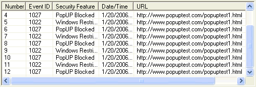
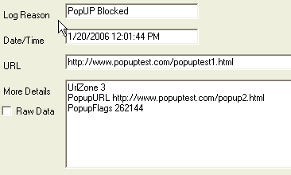

With the introduction of new products and platforms, there is always a need for tools to help plan and prepare for migrations. Internet Explorer 7 was released about the same time as the Windows Vista operating system, and is the browser shipped with Windows Vista. This section addresses the tools released in order to help enterprise customers test their environments for application compatibility as they evaluate Windows Vista, specifically Internet Explorer 7.
Question: I want to start testing my internal sites, applications as well as our major partner applications. Are there any tools to help me find any problems while Im testing?
Answer: Along with the introduction of Internet Explorer 7 for Windows XP, Microsoft released the Windows Vista operating system which includes Internet Explorer 7. Microsoft created the Application Compatibility Toolkit to help enterprise planning and testing for migrations to Windows Vista. Included in the Application Compatibility Toolkit is the Internet Explorer Test Tool, which focuses on specific issues relating to Internet Explorer 7. While these tools are designed for Windows Vista migration planning and testing, the Internet Explorer Test Tool provides useful insight and information about compatibility issues which impact Internet Explorer 7 on Windows XP as well.
Solution: The Internet Explorer Test Tool is one component of the Application Compatibility Toolkit (available at http://www.microsoft.com/downloads/details.aspx?FamilyID=24da89e9-b581-47b0-b45e-492dd6da2971&displaylang=en). More information and details about the Internet Explorer Test Tool can be found at http://technet2.microsoft.com/WindowsVista/en/library/8d2a6345-0d45-4909-bc0c-f9e0f86ad8b11033.mspx?mfr=true. The step by step guide to configuring and working with the Application Compatibility Toolkit is available at http://www.microsoft.com/downloads/details.aspx?FamilyId=BC931BFD-D279-4060-B370-08FA52F97A8D&displaylang=en.
Question:
Using the Internet Explorer Test Tool is helpful at identifying areas that may not work properly in my environment, but the logs are pretty long. How do I figure out which of this information will really cause problems with my deployment?Answer: The purpose of the Internet Explorer Test Tool is to provide details on all issues that may impact compatibility before you begin widespread deployments. While the tool may gather a large amount of data, the information in it is important and should be reviewed to ensure there are no critical problems that will impact your environment.
Solution: To help sort through the potentially large amount of data collected by the Internet Explorer Test Tool, the tool was designed to quickly and easily provide detailed information on each entry. An example of data collected by the Internet Explorer Test Tool is:
The More Details section of the logging output provides more information about why something was blocked (or logged), for example:
The tool provides useful and actionable information for issues that break web applications or prevent expected behaviors. By reading the detailed information from the logs, you should be able to specifically identify and easily resolve critical issues. Many issues identified with the Internet Explorer Test Tool are related to the security related changes made in Internet Explorer 7. See the document at http://msdn2.microsoft.com/en-us/library/bb250493(VS.85).aspx for more detailed information on security related compatibility issues identified in your logs.
Question: Many of the errors I see in the reporting logs are about CSS errors, but the sites look fine to me, can I just ignore those errors? What will happen if we dont fix them before we deploy?
Answer: The errors you see in your logs are important to note, but they may not require action to successfully deploy Internet Explorer 7 in your environment.
Solution: Many of the standards support design changes made in Internet Explorer 7 can be mitigated by the use of certain DOCTYPE modes. While it is not recommended to build new content using the quirks mode settings, legacy content may be left alone and the DOCTYPE may remain unchanged. If you do not see any layout or other rendering issues in your testing, you can safely ignore the errors.
However, if you do identify certain pages and layouts that do not appear to be correct, the log information gathered by the Internet Explorer Test Tool will help you understand the specific changes you need to make before you begin deployment. To help developers discover these sites and their workarounds, IE7 will create a log whenever it discovers a workaround that has been rendered unnecessary by the improvements in IE7. The following list shows some of the CSS fixes in IE7: